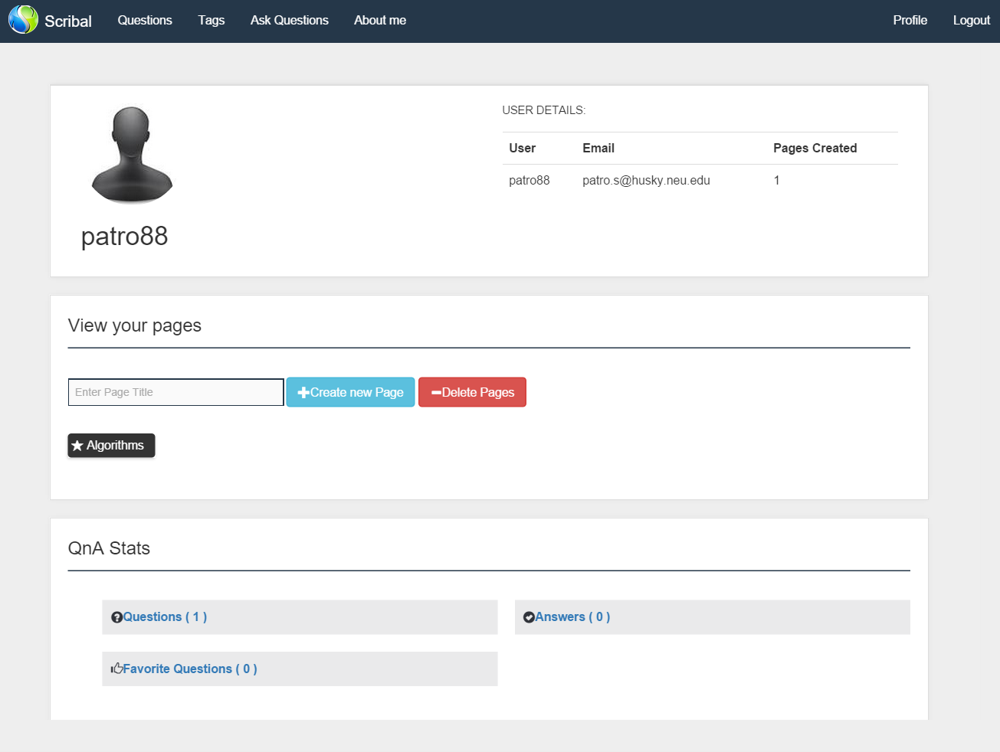

Project : Profile Page
The Profile Page is displayed on successful login. This page displays details of the user logged in.Follwing details are displayed to be precise.
- User name (alias).
- User email id.
- No of pages created.
- Pages List.
- Create and delete page link.
- Questions asked.
- Questions answered.
- Questions liked.
- Links to above questions.
Snapshot :

Profile Services
This page uses three services designed in NodeJS and use MongoDB for storage purpose :
- Service to fetch user details from loginService
- Service to fetch pages details from PagesService
- Service to fetch Question details including Questions asked, answered and liked.
Next Page